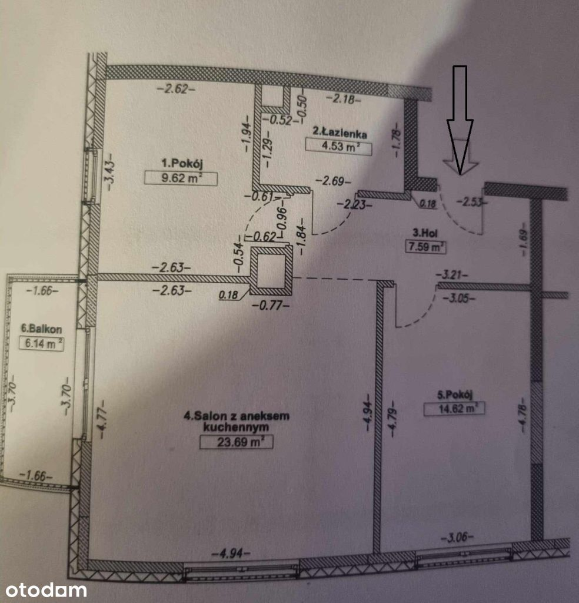
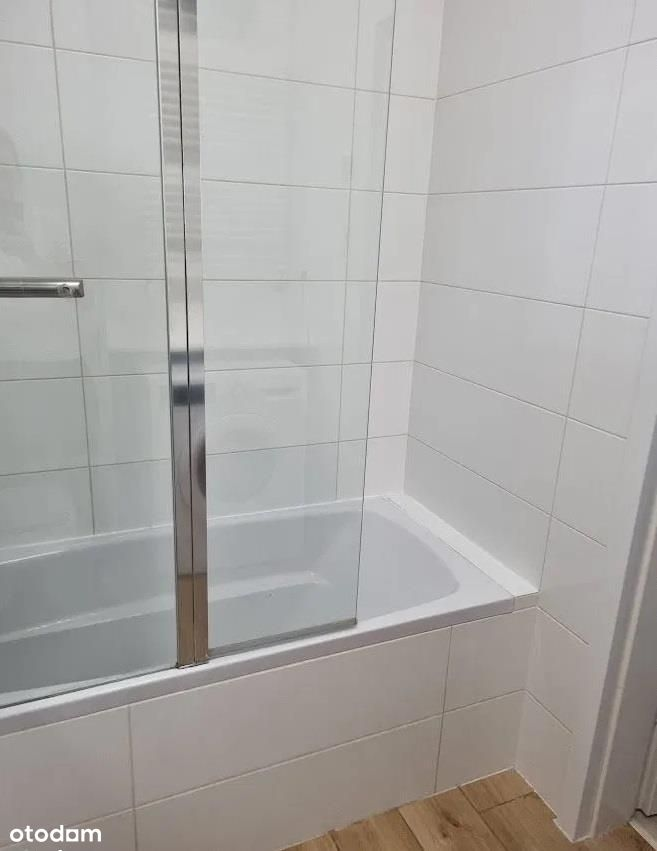
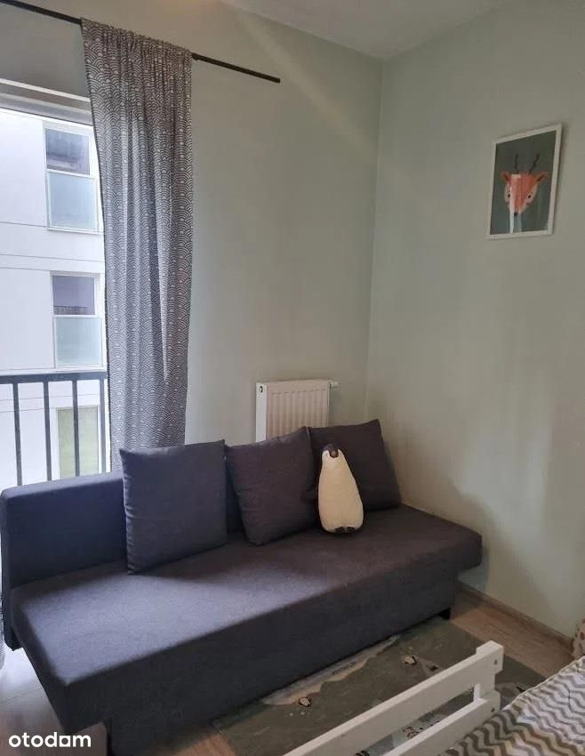
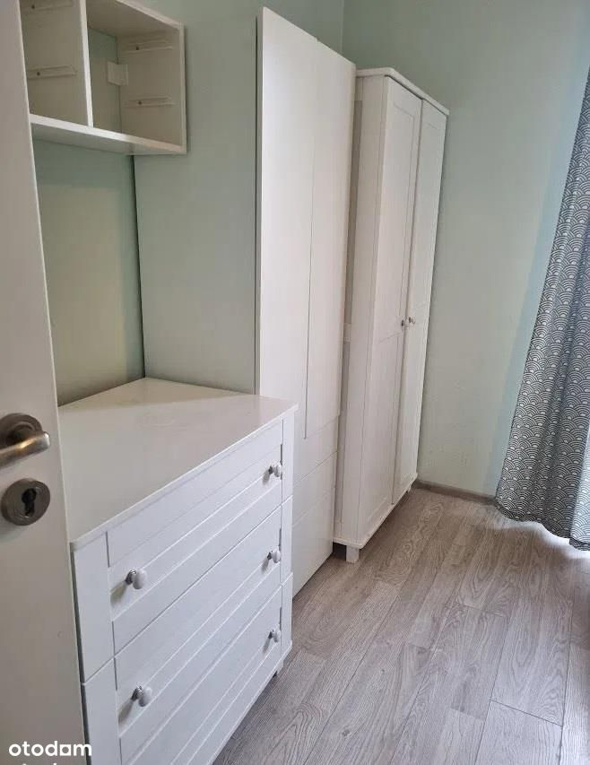
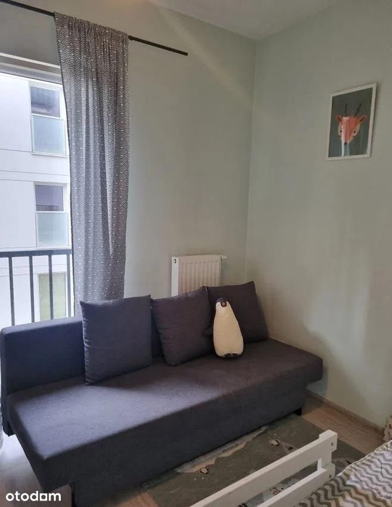
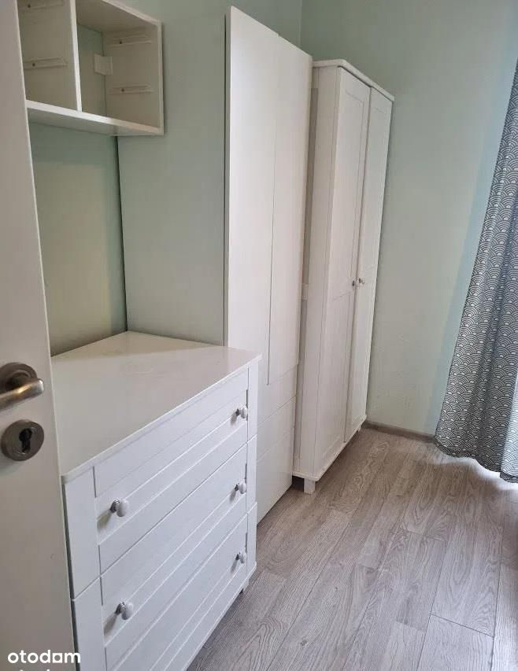

Do sprzedania ładne 3-pokojowe mieszkanie o powierzchni 60.05m2 w pełni wyposażone i umeblowane - gotowe do wprowadzenia znajdujące się na nowym Osiedlu Wilno przy ulicy Ponarskiej.
Lokal mieści się na 1.piętrze w 3.piętrowym budynku z windą z 2018 roku i składa się z:
- salonu z aneksem kuchennym,
- bardzo dużej sypialni,
- dodatkowego pokoju,
- przedpokoju,
- łazienki
- balkonu o powierzchni 6,14 m.
Budynek
Mieszkanie położone jest w kameralnej inwestycji Villa Neptun II z 2018 roku, która harmonijnie wpisuje się w rodzinny charakter okolicy. Osiedle cechuje niska zabudowa, a przestrzeń wspólną wypełniają ulice, place miejskie, skwery, alejki oraz fontanny.
Komunikacja:
Osiedle Wilno to swego rodzaju "miasteczko w mieście," (wizualnie załączone na zdjęciach). Na osiedlu można odpocząć od zgiełku miasta, a sam dojazd do Centrum zajmuje zaledwie 15-20 minut. Bezpośrednio na teren osiedla dojeżdżają również dwa autobusy nocne oraz dzienne.
Lokalizacja:
Osiedle Wilno posiada własną stację PKP. Dojazd metro Dworzec Wileński 5 minut. Dojazd do metro Trocka 8-10 min autobusem.
Od klatki 300 metrów do stacji PKP Zacisze Wilno oraz 100 metrów do przystanku autobusowego.
Do mieszkania przynależy:
- Komórka lokatorska - płatna dodatkowo 15tys.
- Miejsce postojowe w garażu podziemnym - płatne dodatkowo 35tys.
Czynsz - około 900 zł.
Forma własności:
Pełna własność z założoną z księgą wieczystą. Możliwy zakup na kredyt.
Zapraszam do kontaktu pod numerem telefonu 531 333 050
Powyższa oferta ma charakter informacyjny i nie stanowi oferty handlowej.

 
